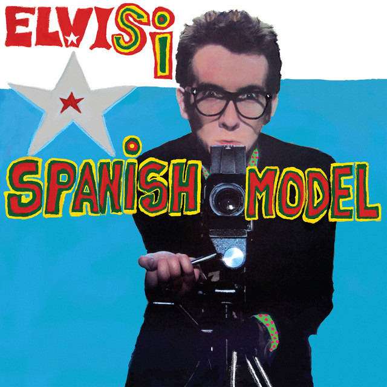

Elvis Costello and the Attractions - Spanish Model



Información del álbum facilitada por discogs.com:
Fecha de lanzamiento: 2021
Géneros: Rock, Latin
Estilos: New Wave, Pop Rock
Tracklist: A1. No Action (feat. Vega (10) & Sebastian Krys)
A2. (Yo No Quiero Ir A) Chelsea / (I Don’t Want To Go To) Chelsea (feat. Elsten Torres & Fuego (4) & Raquel Sofía & Sebastian Krys & Stefano Vieni)
A3. Yo Te Vi / The Beat (feat. Elsten Torres & Robi Draco Rosa & Hector Espinoza)
A4. Pump It Up (feat. Juanes & Mosty)
A5. Detonantes / Little Triggers (feat. Ximena Muñoz & Sebastian Krys)
A6. Tu Eres Para Mi / You Belong To Me (feat. Ximena Muñoz & Luis Fonsi)
A7. Hand In Hand (feat. Francisca Valenzuela & Luis Humberto Navejas & Sebastian Krys & Julian Navejas)
A8. La Chica De Hoy / This Year’s Girl (feat. Ximena Muñoz & Sebastian Krys)
B1. Mentira / Lip Service (feat. Elsten Torres & Pablo López (2) & Max Miglin)
B2. Viviendo En El Paraiso / Living In Paradise (feat. Jesse & Joy & Ximena Muñoz & Alan Ortiz Grande)
B3. Lipstick Vogue (feat. Elsten Torres & Morat (2) & Alejandro “Tibu” Garcia & Juan Pablo Isaza & Juan Pablo Villamil)
B4. La Turba / Night Rally (feat. Jorge Drexler & Lucas Piedracueva)
B5. Llorar / Big Tears (feat. Ximena Muñoz & Sebastian Krys)
B6. Radio Radio (feat. Carlos Vandera & Fito Páez & Diego Olivero)
B7. Crawling To The U.S.A. (feat. Andrea Sandoval & Luis Mitre & Sebastian Krys)
B8. Se Esta Perdiendo La Inocencia / Running Out Of Angels (feat. Vega (10) & Kike Fuentes)